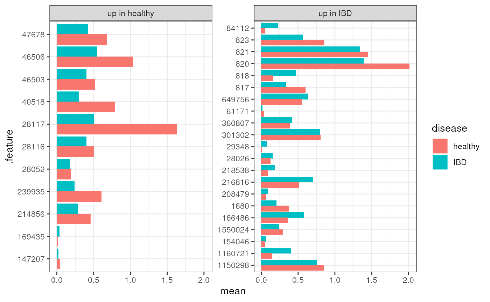

vignettes/articles/ibd-aerophilicity-enrichment.Rmd
ibd-aerophilicity-enrichment.Rmd
library(bugphyzzAnalyses)
library(bugphyzz)
library(curatedMetagenomicData)
library(dplyr)
library(tidySummarizedExperiment)
library(taxPPro)
library(EnrichmentBrowser)
library(ggplot2)For this example, let’s use the data of the HMP_2019_bidmdb study through cMD:
data_name <- "HallAB_2017.relative_abundance"
tse <- curatedMetagenomicData(
pattern = data_name,
dryrun = FALSE, rownames = 'NCBI',
counts = TRUE
)[[1]]
tse
#> class: TreeSummarizedExperiment
#> dim: 503 259
#> metadata(1): agglomerated_by_rank
#> assays(1): relative_abundance
#> rownames(503): 853 820 ... 172901 1262744
#> rowData names(7): superkingdom phylum ... genus species
#> colnames(259): p8582_mo1 p8582_mo10 ... SKST041_2_G103027
#> SKST041_3_G103028
#> colData names(24): study_name subject_id ... HBI SCCAI
#> reducedDimNames(0):
#> mainExpName: NULL
#> altExpNames(0):
#> rowLinks: a LinkDataFrame (503 rows)
#> rowTree: 1 phylo tree(s) (10430 leaves)
#> colLinks: NULL
#> colTree: NULLUse only a subset:
rank_cols <- colnames(rowData(tse))
tidy_data <- tidySummarizedExperiment::as_tibble(tse) |>
rename(taxon_name = .feature, sample = .sample)
sample_data <- tidy_data |>
select(-rank_cols, -taxon_name, -relative_abundance) |>
distinct()
sample_data_split <- split(sample_data, factor(sample_data$disease))
min_n <- min(vapply(sample_data_split, nrow, integer(1)))
samples <- lapply(sample_data_split, function(x) {
set.seed(1234)
int_vct <- sample(1:nrow(x), size = min_n)
x[int_vct,]$sample
}) |>
unlist(use.names = FALSE)
tse_subset <- tse[,samples] |>
filterTaxa()
tse_subset
#> class: TreeSummarizedExperiment
#> dim: 110 148
#> metadata(1): agglomerated_by_rank
#> assays(1): relative_abundance
#> rownames(110): 853 820 ... 544645 329854
#> rowData names(7): superkingdom phylum ... genus species
#> colnames(148): SKST007_7_G103016 SKST006_10_G102994 ... p8712_mo4
#> p8748_mo12
#> colData names(24): study_name subject_id ... HBI SCCAI
#> reducedDimNames(0):
#> mainExpName: NULL
#> altExpNames(0):
#> rowLinks: a LinkDataFrame (110 rows)
#> rowTree: 1 phylo tree(s) (10430 leaves)
#> colLinks: NULL
#> colTree: NULL
taxa_data <- tidy_data |>
dplyr::filter(taxon_name %in% rownames(tse_subset)) |>
select(all_of(c('taxon_name', rank_cols))) |>
distinct()
dim(taxa_data)
#> [1] 110 8Annotations and microbe signatures come from the bugphyzz package. Since cMD contains data at the species level, let’s use signatures at the species level. We need to check the completness (number of taxa in cMD samples annotated in bugphyzz)
aer <- physiologies('aerophilicity')[[1]]
aer_species <- filter(aer, Rank == 'species')
## Check completeness
mean(taxa_data$taxon_name %in% aer_species$NCBI_ID) * 100
#> [1] 59.09091Let’s try to increase the completeness with ASR/inheritance propagation using majority vote:
aer_plus <- aer |>
propagate()
aer_plus_species <- filter(aer_plus, Rank == 'species')
## Check completeness
mean(taxa_data$taxon_name %in% aer_plus_species$NCBI_ID) * 100
#> [1] 72.72727Let’s get some signatures for aerobic, anaerobic, and facultatively anaerobic:
attribute_names <- c('aerobic', 'anaerobic', 'facultatively anaerobic')
aer_sig <- getSignatures(
aer, tax.id.type = 'NCBI_ID', tax.level = 'species'
)
aer_sig <- aer_sig[names(aer_sig) %in% attribute_names]
aer_sig <- lapply(aer_sig, as.character)
lapply(aer_sig, head)
#> $aerobic
#> [1] "291968" "435" "178900" "146475" "178901" "304077"
#>
#> $anaerobic
#> [1] "65403" "905" "187327" "1748" "1749" "118367"
#>
#> $`facultatively anaerobic`
#> [1] "716" "644" "645" "1282886" "654" "714"For propagated signatures
aer_plus_sig <- getSignatures(
aer_plus, tax.id.type = 'NCBI_ID', tax.level = 'species'
)
aer_plus_sig <- aer_plus_sig[names(aer_plus_sig) %in% attribute_names]
aer_plus_sig <- lapply(aer_plus_sig, as.character)
lapply(aer_plus_sig, head)
#> $aerobic
#> [1] "1287735" "202950" "65497" "716" "645" "56946"
#>
#> $anaerobic
#> [1] "905" "187327" "239935" "214856" "28117" "33029"
#>
#> $`facultatively anaerobic`
#> [1] "716" "645" "668" "40269" "1396" "292"Comparing numbers
df <- data.frame(
aer = vapply(aer_sig, length, integer(1)),
aer_plus = vapply(aer_plus_sig, length, integer(1))
)
df
#> aer aer_plus
#> aerobic 3419 10024
#> anaerobic 280 1438
#> facultatively anaerobic 352 1273
taxa_data <- as.data.frame(rowData(tse_subset))We got a lot more species
enrich_output <- sbea(
method = 'gsea', se = da_output, gs = aer_sig, alpha = 0.05, perm = 0,
padj.method = 'none'
)
gsRanking(res = enrich_output, signif.only = TRUE)
#> DataFrame with 1 row and 2 columns
#> GENE.SET PVAL
#> <character> <numeric>
#> 1 anaerobic 0.00168
enrich_output_plus <- sbea(
method = 'gsea', se = da_output, gs = aer_plus_sig, alpha = 0.05, perm = 0,
padj.method = 'none'
)
gsRanking(res = enrich_output_plus, signif.only = TRUE)
#> DataFrame with 1 row and 2 columns
#> GENE.SET PVAL
#> <character> <numeric>
#> 1 anaerobic 3.87e-05This means anaerobic taxa are enriched in IBD samples?
enriched_taxa <- enrich_output_plus$gs$anaerobic
tse_enriched <- da_output[enriched_taxa,]
enriched_data <- tidySummarizedExperiment::as_tibble(tse_enriched)
dim(enriched_data)
#> [1] 4588 39
tse_relab <- curatedMetagenomicData(
pattern = data_name,
dryrun = FALSE, rownames = 'NCBI',
counts = FALSE
)[[1]]
relab_data <- tidySummarizedExperiment::as_tibble(tse_relab)
relab_data |>
mutate(relab = log(relative_abundance + 1)) |>
group_by(.feature, disease) |>
summarise(mean = mean(relab)) |>
ungroup() |>
filter(.feature %in% enriched_taxa) |>
left_join(enriched_data) |>
mutate(direction = ifelse(FC > 0, "up in IBD", "up in healthy")) |>
ggplot(aes(.feature, mean)) +
geom_col(aes(fill = disease), position = 'dodge') +
# scale_fill_manual(
# values = c('firebrick', 'dodgerblue'),
# labels = c('IBD', 'healthy')
# ) +
facet_wrap(~direction, ncol = 2, scale = 'free_y') +
theme_bw() +
coord_flip()
sessionInfo()
#> R version 4.2.1 (2022-06-23)
#> Platform: x86_64-pc-linux-gnu (64-bit)
#> Running under: Ubuntu 20.04.5 LTS
#>
#> Matrix products: default
#> BLAS: /usr/lib/x86_64-linux-gnu/blas/libblas.so.3.9.0
#> LAPACK: /usr/lib/x86_64-linux-gnu/lapack/liblapack.so.3.9.0
#>
#> locale:
#> [1] LC_CTYPE=C.UTF-8 LC_NUMERIC=C LC_TIME=C.UTF-8
#> [4] LC_COLLATE=C.UTF-8 LC_MONETARY=C.UTF-8 LC_MESSAGES=C.UTF-8
#> [7] LC_PAPER=C.UTF-8 LC_NAME=C LC_ADDRESS=C
#> [10] LC_TELEPHONE=C LC_MEASUREMENT=C.UTF-8 LC_IDENTIFICATION=C
#>
#> attached base packages:
#> [1] stats4 stats graphics grDevices utils datasets methods
#> [8] base
#>
#> other attached packages:
#> [1] npGSEA_1.32.0 GSEABase_1.58.0
#> [3] annotate_1.74.0 XML_3.99-0.11
#> [5] AnnotationDbi_1.58.0 DESeq2_1.36.0
#> [7] ggplot2_3.3.6 EnrichmentBrowser_2.26.0
#> [9] graph_1.74.0 taxPPro_0.1.0
#> [11] tidySummarizedExperiment_1.6.1 dplyr_1.0.10
#> [13] curatedMetagenomicData_3.4.2 TreeSummarizedExperiment_2.4.0
#> [15] Biostrings_2.64.1 XVector_0.36.0
#> [17] SingleCellExperiment_1.18.1 SummarizedExperiment_1.26.1
#> [19] Biobase_2.56.0 GenomicRanges_1.48.0
#> [21] GenomeInfoDb_1.32.4 IRanges_2.30.1
#> [23] S4Vectors_0.34.0 BiocGenerics_0.42.0
#> [25] MatrixGenerics_1.8.1 matrixStats_0.62.0
#> [27] bugphyzz_0.0.1.3 bugphyzzAnalyses_0.1.0
#>
#> loaded via a namespace (and not attached):
#> [1] utf8_1.2.2 tidyselect_1.2.0
#> [3] RSQLite_2.2.18 htmlwidgets_1.5.4
#> [5] grid_4.2.1 hoardr_0.5.2
#> [7] BiocParallel_1.30.4 munsell_0.5.0
#> [9] ScaledMatrix_1.4.1 codetools_0.2-18
#> [11] ragg_1.2.3 statmod_1.4.37
#> [13] withr_2.5.0 colorspace_2.0-3
#> [15] filelock_1.0.2 highr_0.9
#> [17] knitr_1.40 uuid_1.1-0
#> [19] labeling_0.4.2 KEGGgraph_1.56.0
#> [21] conditionz_0.1.0 GenomeInfoDbData_1.2.8
#> [23] farver_2.1.1 bit64_4.0.5
#> [25] rprojroot_2.0.3 vctrs_0.4.2
#> [27] treeio_1.20.2 generics_0.1.3
#> [29] xfun_0.33 BiocFileCache_2.4.0
#> [31] R6_2.5.1 ggbeeswarm_0.6.0
#> [33] rsvd_1.0.5 taxize_0.9.100
#> [35] locfit_1.5-9.6 bitops_1.0-7
#> [37] cachem_1.0.6 reshape_0.8.9
#> [39] DelayedArray_0.22.0 assertthat_0.2.1
#> [41] promises_1.2.0.1 scales_1.2.1
#> [43] vroom_1.6.0 beeswarm_0.4.0
#> [45] gtable_0.3.1 beachmat_2.12.0
#> [47] bold_1.2.0 rlang_1.0.6
#> [49] genefilter_1.78.0 systemfonts_1.0.4
#> [51] splines_4.2.1 lazyeval_0.2.2
#> [53] BiocManager_1.30.18 mgsub_1.7.3
#> [55] yaml_2.3.6 reshape2_1.4.4
#> [57] httpuv_1.6.6 tools_4.2.1
#> [59] ellipsis_0.3.2 decontam_1.16.0
#> [61] RColorBrewer_1.1-3 jquerylib_0.1.4
#> [63] MultiAssayExperiment_1.22.0 Rcpp_1.0.9
#> [65] plyr_1.8.7 sparseMatrixStats_1.8.0
#> [67] zlibbioc_1.42.0 purrr_0.3.5
#> [69] RCurl_1.98-1.9 viridis_0.6.2
#> [71] zoo_1.8-11 ggrepel_0.9.1
#> [73] cluster_2.1.4 fs_1.5.2
#> [75] crul_1.3 DECIPHER_2.24.0
#> [77] magrittr_2.0.3 data.table_1.14.4
#> [79] hms_1.1.2 mime_0.12
#> [81] evaluate_0.17 xtable_1.8-4
#> [83] gridExtra_2.3 compiler_4.2.1
#> [85] scater_1.24.0 tibble_3.1.8
#> [87] crayon_1.5.2 htmltools_0.5.3
#> [89] mgcv_1.8-40 later_1.3.0
#> [91] tzdb_0.3.0 geneplotter_1.74.0
#> [93] tidyr_1.2.1 DBI_1.1.3
#> [95] ExperimentHub_2.4.0 dbplyr_2.2.1
#> [97] taxizedb_0.3.0 MASS_7.3-58.1
#> [99] rappdirs_0.3.3 Matrix_1.5-1
#> [101] readr_2.1.3 permute_0.9-7
#> [103] cli_3.4.1 parallel_4.2.1
#> [105] pkgconfig_2.0.3 pkgdown_2.0.6
#> [107] plotly_4.10.0 scuttle_1.6.3
#> [109] xml2_1.3.3 foreach_1.5.2
#> [111] vipor_0.4.5 bslib_0.4.0
#> [113] DirichletMultinomial_1.38.0 mia_1.4.0
#> [115] yulab.utils_0.0.5 stringr_1.4.1
#> [117] digest_0.6.30 vegan_2.6-4
#> [119] httpcode_0.3.0 rmarkdown_2.17
#> [121] tidytree_0.4.1 edgeR_3.38.4
#> [123] DelayedMatrixStats_1.18.2 curl_4.3.3
#> [125] shiny_1.7.2 lifecycle_1.0.3
#> [127] nlme_3.1-160 jsonlite_1.8.2
#> [129] BiocNeighbors_1.14.0 limma_3.52.4
#> [131] desc_1.4.2 viridisLite_0.4.1
#> [133] fansi_1.0.3 pillar_1.8.1
#> [135] lattice_0.20-45 survival_3.4-0
#> [137] KEGGREST_1.36.3 fastmap_1.1.0
#> [139] httr_1.4.4 interactiveDisplayBase_1.34.0
#> [141] glue_1.6.2 png_0.1-7
#> [143] iterators_1.0.14 BiocVersion_3.15.2
#> [145] bit_4.0.4 Rgraphviz_2.40.0
#> [147] stringi_1.7.8 sass_0.4.2
#> [149] blob_1.2.3 textshaping_0.3.6
#> [151] BiocSingular_1.12.0 AnnotationHub_3.4.0
#> [153] memoise_2.0.1 irlba_2.3.5.1
#> [155] ape_5.6-2